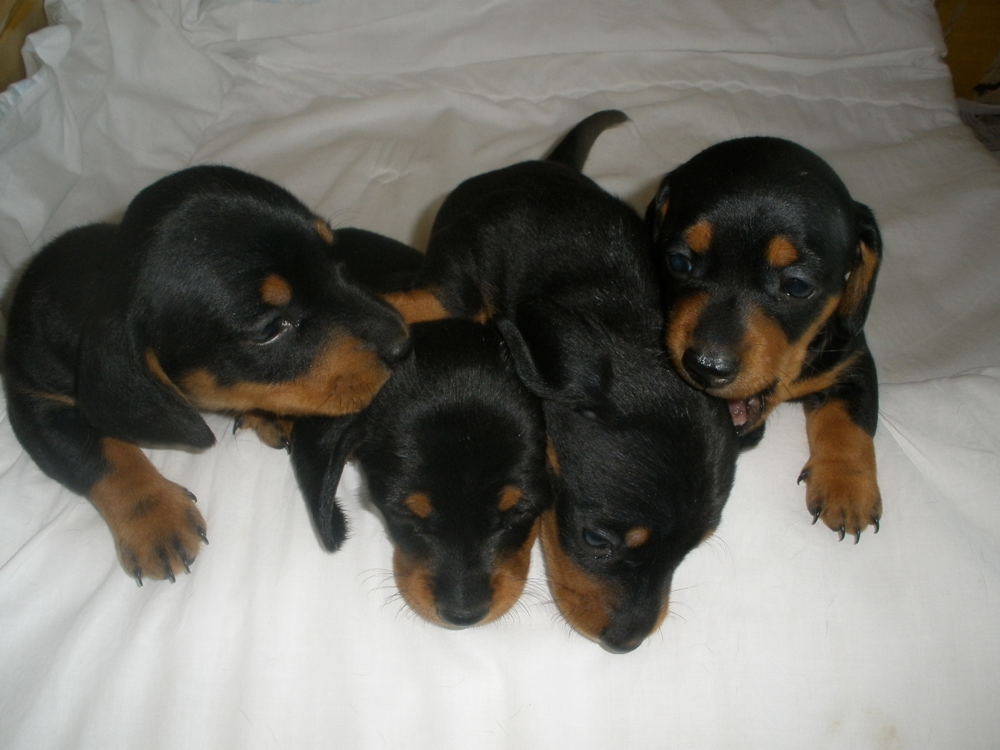
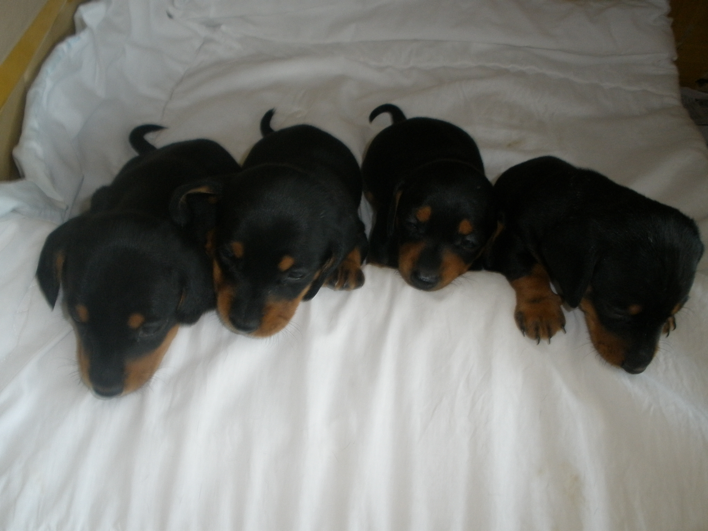

유진이(초등2학년)는 1남 2녀 중 막내 맞벌이 부모는 오빠와 년년생이라 돌봄이 필요하여 조부모집으로 들어가서 살게됨. 막내 유진이는 태어난 후 할머니 양육으로 성장함. 큰딸은 남동생과 친밀하지만 유진이를 싫어함. 유진이는 대장손 오빠를 자주 때리고 잡아채는 등 시기를 히고 언니보다 더 예뻐져야 한다고 질투를 함. 년년생 오빠는 여동생에게 밀려 욱하고 큰소리로 화를 내거나 눈물을 자주 흘림. 이에 약물치료를 받아 많이 호전되고 있음. 유진이의 자기중심적 행동은 학교에서 거짓말, 도벽이 자주 나타남. 꾸중을 하면 몸이 아프다고 핑게를 대거나 자신은 억울하여 쓸모없는 인간이라는 등 부정적인 말을 사용하여 부모는 걱정을 많이 함

유진이(초등 2학년)의 정서사회적 특징을 다음과 같이 정리할 수 있다.
1. 정서적 특징
1) 질투와 시기심
언니보다 더 예뻐져야 한다는 생각과 오빠를 때리거나 잡아채는 행동에서 강한 질투심과 시기심을 보인다.
2) 자기중심적 사고
자신의 욕구와 감정이 최우선이며, 타인의 감정이나 상황을 고려하지 않는 모습을 보인다.
3) 부정적 자아상
부모의 꾸중에 대해 "쓸모없는 인간"이라는 표현을 사용하는 등 낮은 자존감과 부정적인 자아상을 가지고 있다.
4) 회피적 대응
꾸중을 받을 때 몸이 아프다고 핑계를 대는 것은 정서적 스트레스 상황에서의 회피적 대응을 나타낸다.
5) 억울함과 피해 의식
자신이 억울하다고 표현하며 타인으로부터의 부당한 대우를 느끼는 경향이 있다.
2. 사회적 특징
1) 가족 내 갈등
언니와의 관계에서 배척감을 느끼고, 오빠에 대해서는 공격적인 행동을 보인다. 이는 가족 내에서 자신의 위치에 대한 혼란과 인정 욕구의 표현으로 볼 수 있다.
2) 또래 관계의 어려움
학교에서 거짓말과 도벽을 보이는 것은 또래 관계에서 인정받거나 주목받고 싶은 욕구와 관련이 있을 수 있다.
3) 사회적 규범 이해 부족
거짓말과 도벽은 사회적 규칙과 규범을 이해하는 데 어려움이 있음을 시사한다.
4) 감정 조절의 미숙함
억울함이나 불편한 감정을 건강하게 표현하지 못하고, 신체적 증상(예: 아프다고 핑계)을 통해 회피하는 모습을 보인다.

3. 종합적 분석
유진이는 어린 시절부터 할머니의 양육을 받으며 애착 형성에 어려움을 겪었을 가능성이 있다. 부모와의 애착이 충분히 형성되지 못하면서 정서적 안정감이 부족하고, 자신에 대한 긍정적인 평가를 받지 못해 자존감이 낮아진 것으로 보인다. 가족 내에서의 관계 불균형(언니와의 불화, 오빠에 대한 공격적 행동)은 유진이의 정서적 불안정과 인정 욕구를 반영한다. 또한, 유진이의 부정적 자기표현과 회피적 행동은 정서적 스트레스 상황에서의 대처 능력이 부족함을 보여준다. 이는 사회적 관계에서도 문제를 일으키며, 거짓말과 도벽과 같은 부적응적 행동으로 이어질 수 있다.
4. 개입 방향 제안
첫째, 정서적 안정감 제공
안전한 환경에서 자신의 감정을 표현할 수 있는 기회를 제공하고, 긍정적인 자아상을 형성할 수 있도록 돕는다.
둘째, 가족 상담 필요
가족 내 역할과 관계를 재정립하여 유진이가 가정 내에서 인정받고 사랑받는 경험을 할 수 있도록 지원한다.
셋째, 사회적 기술 훈련
거짓말과 도벽 같은 행동을 대체할 수 있는 긍정적인 사회적 기술을 교육한다.
넷째, 정서 조절 훈련
억울함이나 불편한 감정을 건강하게 표현할 수 있는 방법을 가르친다.
다섯째, 정서사회적 발달
일관된 규칙과 따뜻한 지지가 필요하며, 가정과 학교에서의 협력적인 접근이 중요하다.
2023.12.14 - [상담] - 초등 저학년 우울증상 및 치료방법
초등 저학년 우울증상 및 치료방법
초등학교 저학년 아동의 우울증상과 치료 방법에 대해 알아보겠습니다. 이 나이대의 아동들은 자신의 감정을 표현하고 이해하는 방식이 성인과 다르기 때문에 또래관계에 다양한 영향을 미칩
think-sis.co.kr